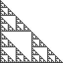

| For lines, squares, and cubes we have seen there is a relationship between a scaling factor r and the number N(r) of copies of a similar shape, scaled by a factor of r, needed to cover the original shape. |
| Representing by d the Euclidean dimension of these shapes, the relationship is |
| N(r) = (1/r)d. |
| Now we assert that if this scaling relationship holds for a shape, then the value of d is the dimension of the shape. |
| Taking the log of both sides of this equation and solving for d we obtain |
| d = Log(N(r))/Log(1/r). |
| For example, the Sierpinski gasket (left) is made of |
| 
|
| So the dimension is Log(3)/Log(2). |
Return to Background.